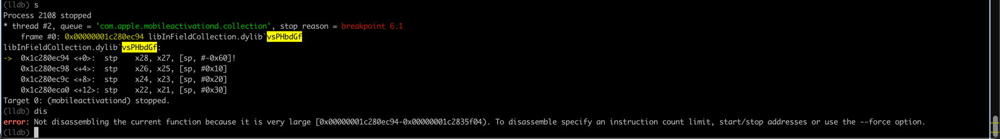

心得
error Not disassembling the current function because it is very large
现象
(lldb) dis
error: Not disassembling the current function because it is very large [0x00000001c280ec94-0x00000001c2835f04). To disassemble specify an instruction count limit, start/stop addresses or use the --force option.

原因
此处（Mach-O中，ObjC的汇编）代码做了混淆，使得该函数最后一行代码是BR的间接跳转，从而使得（包括IDA中的，和此处lldb中的）反编译器无法正确识别函数结束位置。 而误判了一个，起始和结束地址是：
- 0x00000001c280ec94-0x00000001c2835f04
- 总大小是：0x00000001c2835f04 - 0x00000001c280ec94
- = 0x27270
- = 160368
- = 156KB
- 不正常的，非常大的，函数代码量了
- 总大小是：0x00000001c2835f04 - 0x00000001c280ec94
解决办法
- 根据提示，去指定代码起始和结束位置
- 然后用
dis -s startAddress -e endAddress
具体步骤
此处起始地址：已经知道
从lldb上面的调试中：
(lldb) c
Process 2375 resuming
Process 2375 stopped
* thread #3, queue = 'com.apple.mobileactivationd.collection', stop reason = breakpoint 4.1 5.1
frame #0: 0x00000001c280ec94 libInFieldCollection.dylib`vsPHbdGf
libInFieldCollection.dylib`vsPHbdGf:
-> 0x1c280ec94 <+0>: stp x28, x27, [sp, #-0x60]!
0x1c280ec98 <+4>: stp x26, x25, [sp, #0x10]
0x1c280ec9c <+8>: stp x24, x23, [sp, #0x20]
0x1c280eca0 <+12>: stp x22, x21, [sp, #0x30]
Target 0: (mobileactivationd) stopped.
就能看出是：
- 起始地址：
0x1c280ec94
而结束位置，此处需要借助于IDA中：
__text:00000001A8A26C94 _vsPHbdGf
__text:00000001A8A26C94 STP X28, X27, [SP,#-0x10+var_50]!
__text:00000001A8A26C98 STP X26, X25, [SP,#0x50+var_40]
...
__text:00000001A8A26DF8 BR X10
__text:00000001A8A26DF8 ; End of function _vsPHbdGf
__text:00000001A8A26DF8
__text:00000001A8A26DFC
-》（加了基地址后的）二进制内偏移量地址是：00000001A8A26DFC
-》巧了，从最后3位的地址，就完全对得上
-》算出此处的结束地址是：
- 0x1c280edfc
然后去：
dis -s 0x1c280ec94 -e 0x1c280edfc
即可顺利打印反汇编代码。